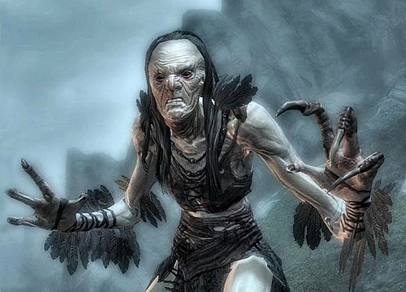
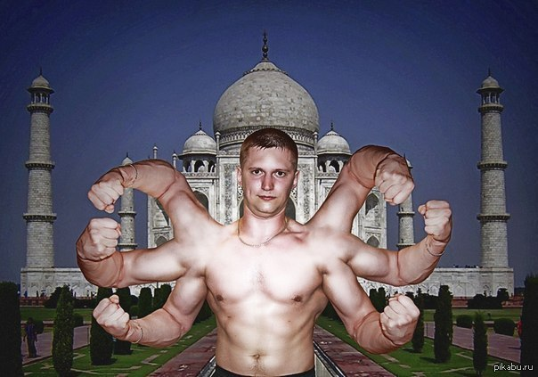

Ведьма из Свердловска заразила 30 человек гепатитом, чтобы создать высшую расу вампиров
Впервые был замечен вампир без волос на голове. Вампиры лысеют?
На суслика-переростка напал собственный хозяин, пока тот ходил в магазин за гелем после бритья

Тот-кого-нельзя-называть 20 лет назад ушел в магазин за хлебом и вернулся
Салтовские ученые модернизировали Хрустальную Пирамиду бермудского треугольника
Человек-грабли снова на свободе. Бегите глупцы, вы не спасетесь